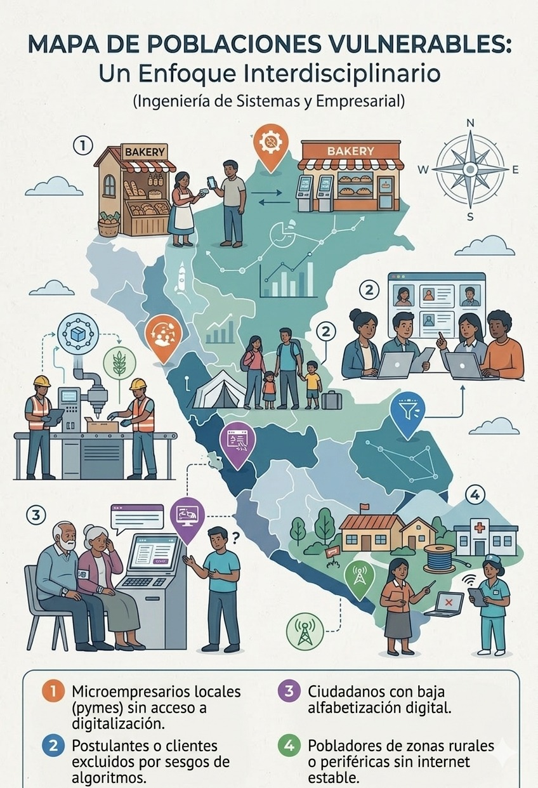
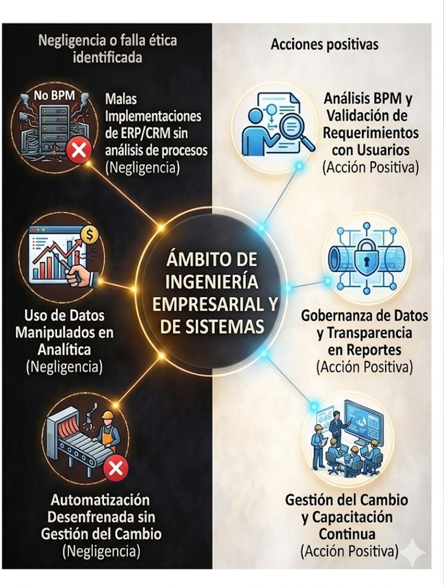

Propósito profesional
Como futuros ingenieros, aspiramos a ser profesionales cuya areté no se limite a la destreza técnica, sino que se manifieste en un hábito virtuoso al gestionar recursos y tecnología. Nuestro telos es transformar las organizaciones mediante soluciones innovadoras que busquen siempre el bien común y el impacto social positivo. Entendemos que nuestra eudaimonía se alcanza cuando logramos el éxito profesional a través del ejercicio responsable de nuestra carrera, contribuyendo al bienestar colectivo y asegurando que el conocimiento esté siempre al servicio de la integridad y el desarrollo humano.
Poblaciones vulnerables que protegemos
🏪 Microempresarios locales (pymes)
Al diseñar sistemas de gestión para grandes empresas, se ignora a los pequeños negocios que no pueden competir por falta de herramientas tecnológicas accesibles.
👴 Ciudadanos con baja alfabetización digital
Si creamos plataformas o apps de servicios públicos muy complejas, excluimos a personas como adultos mayores que no saben usarlas, impidiéndoles acceder a sus derechos.
📋 Postulantes o clientes excluidos por sesgos de algoritmos
Si el software de evaluación tiene prejuicios invisibles, puede negar empleos o créditos a personas solo por su dirección o edad, perpetuando desigualdades estructurales.
🌄 Pobladores de zonas rurales sin internet estable
Si diseñamos modelos de negocio o servicios que solo funcionan online, dejamos desconectados a millones de peruanos, impidiéndoles acceder a educación, telemedicina o mercados.

Mapa crítico profesional

🎙️
Episodio 01 · Dilema ético profesional
[Título del episodio — describe el dilema en una frase]
Insertar reproductor de audio aquí
Pega el código embed de Spotify, Anchor, Google Drive o el enlace directo al archivo de audio del podcast producido en las semanas 6–7.
El dilema analizado
"[Enuncia aquí el dilema ético real vinculado a sistemas o ingeniería empresarial que se discute en el podcast]"
Contraste teórico
Perspectiva kantiana
Resume el argumento desde la ética del deber: ¿qué haría el ingeniero si actuara por principio universal, no por conveniencia técnica o económica?
Perspectiva utilitarista
Resume el argumento desde Mill: ¿qué decisión tecnológica produce el mayor bien para el mayor número de usuarios o personas afectadas?
Vacíos normativos identificados
Describe las situaciones del dilema que los códigos deontológicos no contemplan adecuadamente. ¿Dónde falló la norma frente a la realidad de la ingeniería de sistemas?
Tensiones ético-legales
Explica los conflictos entre la obligación legal y la conciencia moral del ingeniero. ¿Cuándo la regulación tecnológica no alcanza para guiar una decisión justa?
Propuesta de humanización
Presenta los artículos o reformulaciones que reflejen una ética tecnológica más humanista y contextualizada al Perú. Fundaméntalas filosóficamente.
Reflexión sobre presión de decisión
¿Cómo influye la presión institucional o del mercado tecnológico en las decisiones del ingeniero? Conecta con Weber (ética de la responsabilidad) y Levinas (alteridad).
🗺️
Insertar aquí la infografía interactiva (Genially o Canva embed)
⚙️ Capa 1 · Semana 13 · Ética del cuidado
Esta capa representa la fotografía o pieza artística sobre la población vulnerable identificada y el compromiso ético de cuidado que asumimos como ingenieros en nuestro ejercicio profesional.
Compromiso: [Redactar compromiso concreto de cuidado]
🌱 Capa 2 · Semana 14 · Ecoética tecnológica
Esta capa integra la imagen generada con IA que une la población vulnerable con el conflicto sociotecnológico, y plantea nuestro compromiso de responsabilidad con las generaciones futuras.
Compromiso: [Redactar compromiso generacional concreto]